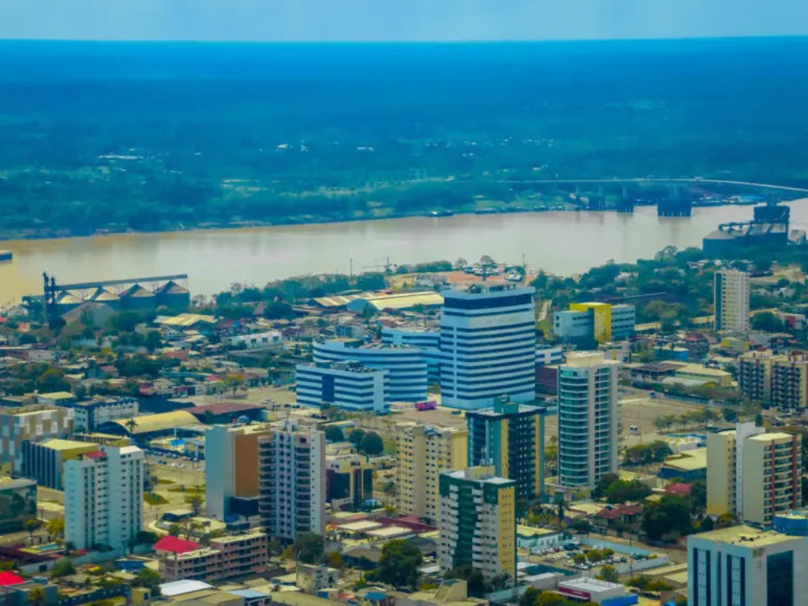

Rondônia é um estado da região Norte que apresentou grande crescimento populacional e econômico nas últimas décadas, principalmente devido à expansão da agropecuária e da agricultura. Sua capital é Porto Velho, localizada às margens do rio Madeira, um dos principais rios da Amazônia. O estado possui áreas de floresta amazônica, mas também se destaca pela produção agrícola, especialmente de café, soja e milho, além da criação de gado. Rondônia tem forte presença de migrantes vindos de várias partes do Brasil, especialmente da região Sul, o que contribuiu para a diversidade cultural local. A construção de rodovias e usinas hidrelétricas também teve grande impacto no desenvolvimento econômico do estado. Apesar disso, Rondônia enfrenta desafios relacionados ao desmatamento e à preservação ambiental.

Voltar